Name: Math 349: Linear Algebra
Exam 1 Solutions
8 March 2001
Were it not for Occam's Razor, which always demands simplicity, I'd be
tempted to believe that human beings are more influenced by distant causes
than immediate ones. This would be especially true of overeducated people,
who are capable of thinking past the immediate and becoming obsessed by the
remote.
- from ``Straight Man'' by Richard Russo
Instructions: Show all work to receive full or partial credit. All University rules and guidelines for student conduct are applicable.
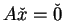
for a real m by n matrix is a subspace of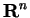
.
Many students struggled with this one.
Since with vector addition and scalar multiplication is a vector space, it is enough to show that the subset of solutions is closed under these operations. Suppose that
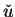
and satisfy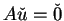
and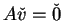
. Then,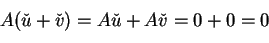
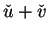
also solves the homogeneous equation, and the subset is closed under addition. Similarly,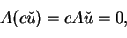
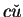
is also in the subset. Therefore, the subset is closed under multiplication. Thus, the subset is a subspace.
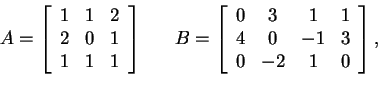
This is accomplished with straightforward matrix multiplication.
The solution is
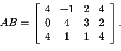
The most effective approach to this problem is by reducing the
augmented matrix, although it is also possible to solve it with brute
force by finding
nine unknowns.
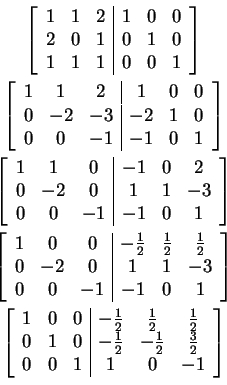
A-1 is the right side of the augmented system.
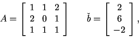
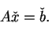
The method of Gaussian elimination requires one to put the system into
row echelon form. Row echelon form is not unique, so you might obtain
a slightly different form with the same solution given here.
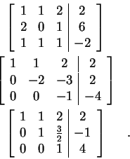
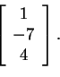
Here, one can continue from the previous problem to put the augmented
matrix into reduced row echelon form.
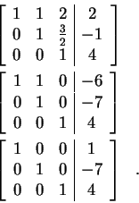
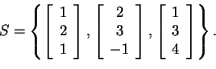
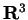
?
The answer is no because one can write the third vector as a
weighted sum of the first two.
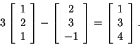
Many students struggled with this one.
The proof is simply a matter of algebra. Suppose we had two such inverses.